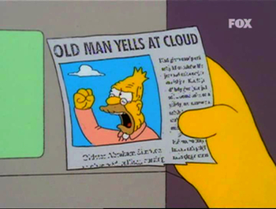

Azure
API
Management
Bryan Coller
Bryan Coller |
|
|
Director @ |
Consulting Experience |
|
| Roughly 20 years of development industry experience (Java, .NET) | Built software for major manufacturing, healthcare and insurance providers in the Milwaukee, Chicago area |
Relevant Focus Areas |
||
|
~15 years Service-Oriented Architectures |
~3 years API Management |
~1 year Azure |
Agenda
- API Management Overview
- Why Azure API Management?
- Demo
- Q&A
Goal
- Demonstrate how well Azure delivers on the promise of API Management.
API Management Overview
API Management Overview
- API Facade on top of existing (backend) systems

Courtesy of: Apigee |
Masks complexity & simplifies accessing those underlying systems |
API Management Use Case
- Proxy is most typical pattern

Proxy Pattern |
- Best for modern (REST/JSON/OpenAPI) services
API Management Use Case, cont'd
- Legacy APIs/Services can be complex
- Transform (mediate) to modern practices
|
|
Message Translator Pattern |
Exception Shielding Pattern |

|
||
API Management Use Case, cont'd
- Transformation Example:

Legacy SOAP Service (broken WSDL) |
+ |
API Management Mediation |
= |

REST/JSON OpenAPI |
|
API Management Use Case, cont'd
- Require data from multiple systems
- Multiple endpoints/transports/protocols
- Prefer a single request with multiple (orchestrated/aggregated)
backend requests

Scatter & Gather Pattern |

|
API Management Core Components
- Gateway (API Management Runtime)
- Proxy API requests/responses
- Policies (throttling, security, etc)
- Products (Bundles of APIs)
- Transform/Orchestrate requests/responses
- Handle authentication, authorization
- Caching and analytics collection
- Publishing tools (API Administrator)
- Manage API lifecycle (Creation, versioning, revisions, retirement)
- Managing access and policies
- Developer testing & debugging
API Management Core Components, cont'd
- Developer portal/API store (API Consumer)
- Self-service access to APIs
- Interactive console for test-driving
- Ability to subscribe, gain access keys
- Reporting and analytics (API Administrator/Stakeholder)
- Monitor and report on API usage and loads
- Raise alerts
- Monetization (API Stakeholder)
- Charging for API access
API Management Logical View

Why Azure API Management?
Many API Managment vendors:
|
|||||||||
Why Azure API Management?
- It's in the Cloud!
 - Immediate option for Azure organizations
- Easy learning curve for Azure developers
- Common Azure UI/UX, Services:
- Portal, Active Directory, Application Insights, Alerts, etc
- Common Azure UI/UX, Services:
Cautions for Azure API Management
- Long-term viability in evolving API Management market
- Does not support hosted on-premise deployments
- Lacks capabilities for later API life cycle stages
Courtesy of: Gartner Reprint
Basic Enterprise Integration on Azure

Demos
API Management Logical View
API Products
Collection of API resources presented to Developers as a bundle
Allows unified management of 1-to-many APIs
Policies
Bits of logic that can be executed during the course of processing an API request and response
Different Levels: Global, Product, API, Operation
Typically handle the following API capabilities:
- Security
- Rate-limiting
- Transformation
- Mediation
Demo
(Products & Policies)
API Proxies
Set of configurable logic that handles API requests
- Allows you to protect, augment, manipulate calls to/from backend services
- Act as managed API facade
Demo
- API Proxies
- Developer Portal
- Security
- Logging
Security - OAuth2

API Management DevOps Recommendation

Thank You!
Presentation available at: https://thedevolution.github.io/AzureAPIManagement/